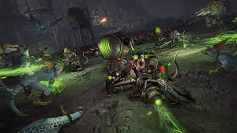

About
Warhammer 2 was released on September 28, 2017 on Steam. Total War: Warhammer II is a video game for the PC, and was developed by Creative Assembly and published by Sega. It is a turn-based strategy game and includes real time tactics in its gameplay. It is the sequel game to the award winning Total War: Warhammer I. The game is the 12th game in the Total War video game series , a series of turn based strategy games developed by Creative Assembly. The game is the second in a planned trilogy of games, with the third uniting the two previous ones. The games themselves take place in the fantasy universe of Warhammer Fantasy battle, a tabletop game created by Games Workshop. On release, the game received widespread critical acclaim and holds a 9/10 on Steam.
Gameplay
Its gameplay features players facing off against AI players. The player can control their own empire and macro-manages its settlements, economy, technology, and diplomacy with AI empires. Players can also manage, move, and engage their armies which is a key function. All of these functions are turn-based. When armies engage they fight in a real time battle employing real time tactics. This part of the game is more strategy and skill based and can heavily tax the player's micromanagement skills.
Plot
In the world of Warhammer, there exists a powerful magic maelstrom known only as the Vortex. The vortex was created long ago by the High Elves to siphon excess magic form the world and prevent the demons of Chaos to spread out into the world and destroy it. however. However an omen comes in the form of a comet, and the major races see that the Vortex is becoming weak and unstable. And so begins the race to claim the vortex, to unravel it, control it, or protect it. 4 races will duke it out in the battle of the Vortex and only one will be the winner.